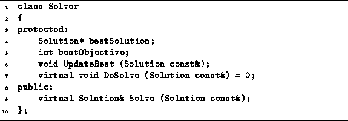
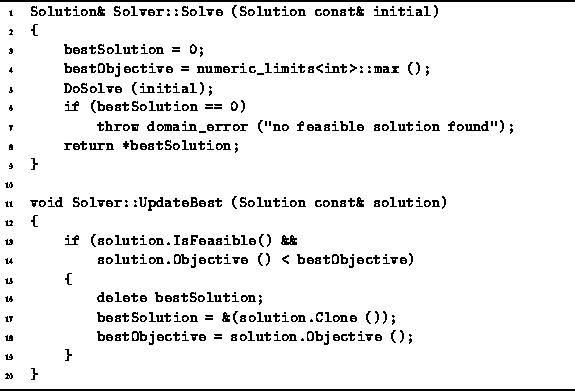

Data Structures and Algorithms
with Object-Oriented Design Patterns in C++
Data Structures and Algorithms
with Object-Oriented Design Patterns in C++The usual way to implement a backtracking algorithm is to write a function or procedure which traverses the solution space. This section presents an alternate, object-oriented approach that is based on the notion of an abstract solver .
Think of a solver as an abstract machine, the sole purpose of which is to search a given solution space for the best possible solution. A machine is an object. Therefore, it makes sense that we represent it as an instance of some class.
Program  declares the abstract class Solver.
The public interface of this class consists
of the single function Solve.
This function takes as its lone argument
a reference to a Solution instance that is the node
in the solution space from which to begin the search.
The Solve function returns a reference to the
to the best solution found.
declares the abstract class Solver.
The public interface of this class consists
of the single function Solve.
This function takes as its lone argument
a reference to a Solution instance that is the node
in the solution space from which to begin the search.
The Solve function returns a reference to the
to the best solution found.

Program: Solver Class Definition
Program also declares two protected member variables,
bestSolution and bestObjective,
and two protected member functions,
UpdateBest and DoSolve.
Since DoSolve is a pure virtual function,
its implementation must be given in a derived class.
Program gives the implementations
for Solve and UpdateBest.

Program: Solver Class Solve and UpdateBest Member Function Definitions
The Solve function does not search the solution space itself. It is the DoSolve routine, which is provided by a derived class, that does the actual searching. The Solve routine merely sets things up for DoSolve. When DoSolve returns it is expected that the bestSolution variable will point to the best solution and that bestObjective will be the value of the objective function for the best solution. In this case, it is assumed that the goal is to minimize the objective function.
The UpdateBest function is meant to be called by the DoSolve routine as it explores the solution space. As each complete solution is encountered, the UpdateBest routine is called to keep track of the solution which minimizes the objective function.
 Copyright © 1997 by Bruno R. Preiss, P.Eng. All rights reserved.
Copyright © 1997 by Bruno R. Preiss, P.Eng. All rights reserved.